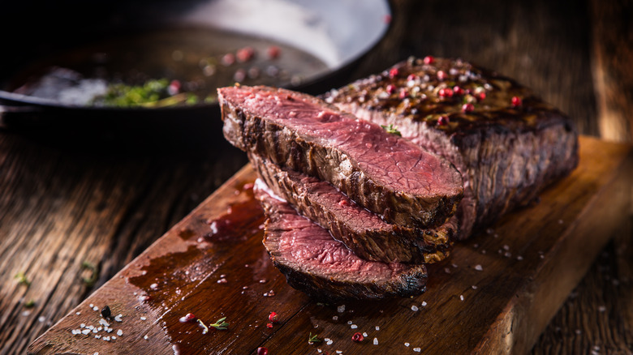

Grilled Delmonico Steaks

description:
Make this Delmonico steak recipe and your friends and family will come running!
The marinated rib-eyes are so tender you can cut them with a fork.
ingreadients:
- ½ cup olive oil
- ¼ cup Worcestershire sauce
- 6 tablespoons soy sauce
- 3 tablespoons steak seasoning
- 3 tablespoons steak sauce (e.g. A-1)
- 2 tablespoons salt
- 12 cloves garlic, roughly chopped
- 4 (10 ounce) Delmonico (rib-eye) steaks
steps:
- Combine oil, Worcestershire sauce,
soy sauce, steak seasoning,
steak sauce, salt, pepper,
and rosemary in the bowl of a food processor.
Add garlic and onion; process until well blended.
- Prick steaks on both sides with a fork,
then place into a large glass baking dish.
Pour marinade over steaks, and flip steaks several times to coat.
Cover and refrigerate for at least 3 hours, or overnight.
- When ready to cook,
preheat an outdoor grill for medium heat and lightly oil the grate.
- Remove steaks from marinade and shake off excess.
Discard remaining marinade.
- Place steaks on the preheated grill;
cover and cook until beginning to firm and
are hot and slightly pink in the center,
about 10 minutes per side. An instant-read thermometer
inserted into the center should read 140 degrees F (60 degrees C)
for medium.